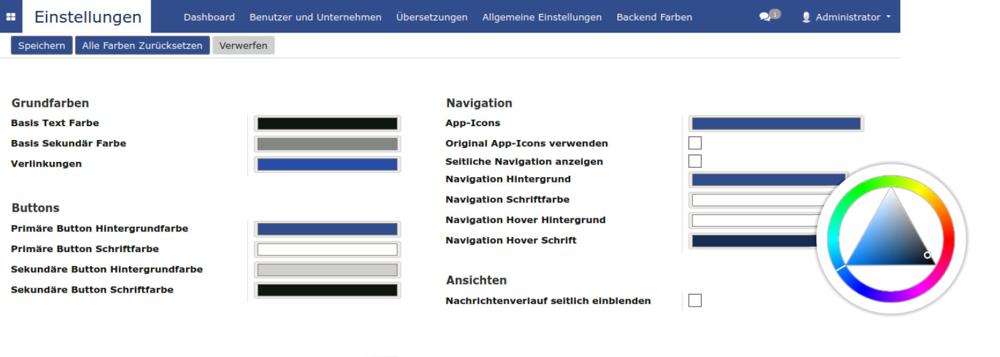
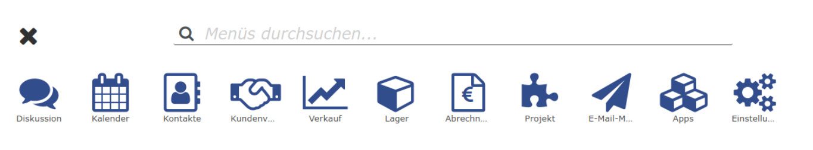
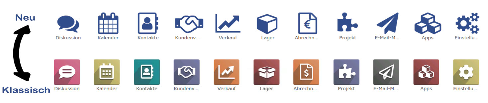
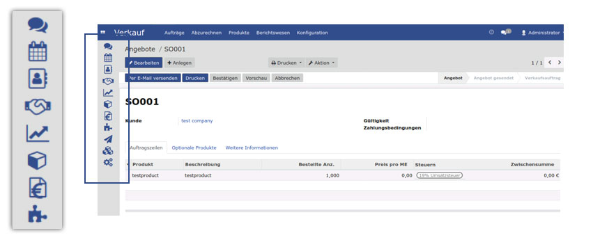
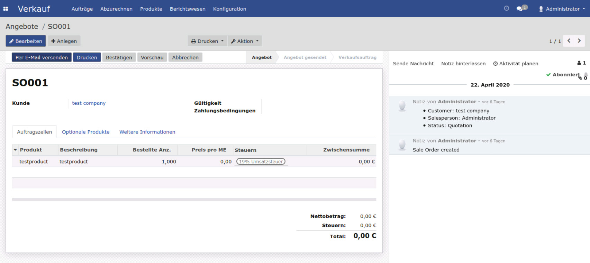

German / Deutsch
Technischer Name: eq_ownerp_ui
Features
Wir unterstützen nur die Community Version!
Odoo Backend in eigene Farben tauchen.
Neues Hauptmenü mit FontAwesome Icons.
Neue oder Original Icons verwenden.
Sidebar, zum schnellen Wechsel von Apps.
Für breite Monitore, kann der Nachrichtenverlauf auf der rechten Seite angezeigt werden, wie z.B. bei der Angebots-Maske.
Weiterhin sind noch diverse kleine Verbesserungen für die mobile Verwendung enthalten.
Installation
Um dieses Modul zu installieren, müssen Sie nur das Modul auswählen und sicherstellen, dass Ihre Abhängigkeiten vorhanden sind.
Konfiguration
Das Modul fügt unter Einstellungen den Menüpunkt Backend Farben ein. Dort können anschliessend eigene Farben konfiguriert werden.
Verwendung
- Nach der Installation, Überschreibt es unter anderem die Hauptnavigation für die Apps.
Abhängigkeiten
base_setup, web